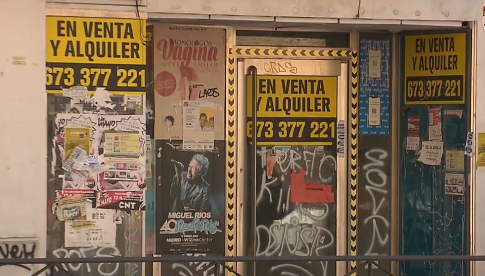
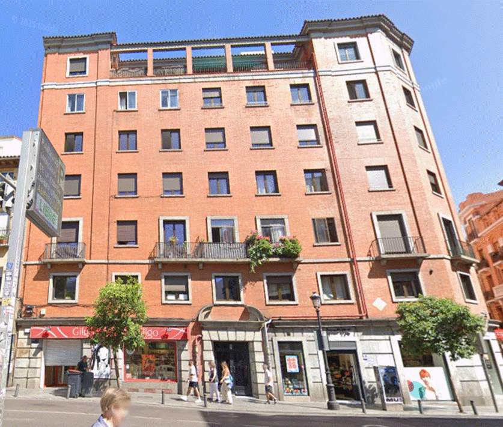
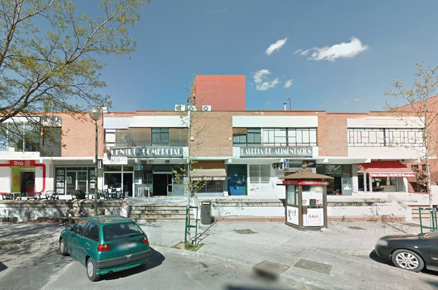

Madrid y sus locales: una historia de claroscuros
En los últimos años, los locales de Madrid han vivido una historia paralela a la de sus propietarios, arrendadores, emprendedores y clientes. Desde 2019, la ciudad ha sufrido una pandemia de COVID-19 que duró casi tres años pero cuyos efectos aún se notan. Antes incluso, los madrileños han visto la explosión en el uso de locales como viviendas tanto para uso turístico como para vivienda estable. Y hay sectores comerciales donde la renovación ha sido tan profunda que la mayoría de los negocios en 2026 no tienen más de 7 años de antigüedad. Más allá de las cifras globales, un análisis más detallado detecta qué se ha ganado, pero también, qué se ha perdido, y dónde.

La ciudad de Madrid se asocia a un carácter acogedor, emprendedor y, en los últimos años, multicultural. Eso supone mucha población residente, con todo tipo de culturas y de formas de vida, además de viajeros y turistas que provienen de todos los rincones. Quienes viven y quienes aquí van y vienen lo hacen muchas veces en busca de oportunidades, lo que atrae a un gran tejido de emprendedores: resulta difícil encontrar un rincón de la ciudad donde alguien no se esté ganando el pan de alguna manera.
Pero existe otra cara de la ciudad: la de la jungla que supone mantener un negocio abierto como forma de vida. ¿A qué se dedican los emprendedores en Madrid? ¿Cómo han cambiado quienes mantienen vivas las calles del Foro? ¿Cuántos de ellos permanecen, y cuántos habrán de volver a intentarlo? Algunas de estas respuestas pueden encontrarse entre la maraña de datos disponibles libre y mensualmente desde 2014, que están accesibles en el Portal de Datos Abiertos del Ayuntamiento de Madrid.
En concreto, el Portal recoge los datos del Censo de Locales, sus actividades y terrazas de hostelería y restauración. En otras palabras, el registro que contiene la azarosa vida de todas y cada una de las actividades comerciales que se desarrollan en la ciudad. Un análisis detenido de más de 15 millones de registros disponibles desde enero de 2019 hasta marzo de 2026 permite arrojar luz sobre qué está pasando en la ciudad, a veces, sin que seamos totalmente conscientes de ello.
¿De qué vive Madrid? Una ciudad de bares, tiendas y peluquerías
De acuerdo con los datos del Censo, había unos 162.000 locales abiertos en Madrid a finales de marzo de 2026. El registro permite distinguir más de 450 tipos de actividades económicas distintas, organizadas en diferentes categorías, aunque un mismo local puede desarrollar varias actividades a la vez.
A vista de pájaro, todo ese mosaico de oportunidades dibuja una imagen como la siguiente.
En conjunto, el comercio ocupa una gran parte del total: unos 43.000 locales se dedican al comercio al por menor, incluyendo casi 5.000 tiendas de ropa y más de 1.000 zapaterías. También son relevantes los cerca de 4.000 concesionarios y talleres de vehículos, así como los 2.000 comercios al por mayor. En total, casi 1 de cada 3 locales madrileños vende algo.
El segundo gran grupo entre los locales abiertos resuelve una necesidad fundamental: la comida y, en menor medida, el alojamiento. Bares, restaurantes, cafeterías, pero también comedores, heladerías o tabernas suman sólo en la capital más de 20.000 establecimientos para satisfacer al hambriento y al sediento, desde el humilde bocata de calamares hasta los menús más refinados.
El tercer gran sector de Madrid son los llamados “Otros servicios personales”. En torno a un 10% de los locales se dedican a mejorar algún aspecto de la vida del prójimo. En otras palabras, este término tan general incluye casi 9.000 ubicaciones donde se dedican a conseguir que gatos y chulapas estén más guapos, o menos feos, llámense peluquerías, centros de estética o clínicas de belleza y otras variedades. Aquí también se incluyen locales dedicados a las reparaciones de todo tipo de aparatos, con casi 2.000 localizaciones. Pero, también, a reparar en las cuestiones más espirituales. Este último epígrafe, el de las “actividades asociativas”, incluye unos 2.000 locales abiertos dedicados a áreas tan dispares como la política, la religión, el cuidado de los animales o el “más allá”: tanto en sentido figurado, como la astrología, como en el más literal, el de las funerarias.
Otros 4.000 locales engloban todo tipo de cuidados de la salud, incluyendo desde consultas de atención primaria hasta residencias de la tercera edad.
Más allá de los servicios cotidianos, Madrid también reserva espacio para actividades vinculadas a la producción cultural, profesional o inmobiliaria. Entre los primeros, se incluyen las actividades artísticas y recreativas (cine, teatro, deportes…), con unos 3.000 locales. Un número similar de locales están dedicados al sector de la construcción, que abarca también la venta de viviendas. El paraguas de las actividades profesionales, como la consultoría, la ingeniería o la gestión de las grandes empresas agrupa a otros 3.000 locales. Este último gremio incluye un número relativamente pequeño de veterinarios: apenas unas 400 referencias se incluyen en este censo de datos para toda la ciudad de Madrid.
¿Vender o vivir?
Cualquier castizo o foráneo que se pasee por Madrid se habrá topado con viviendas a pie de calle que ocupan el lugar antes empleado para todo tipo de comercios, almacenes y otros usos comerciales. Si madrileños y madrileñas tienen la impresión de que cada vez son más y están en todas partes, los datos les dan una buena parte de razón. Pero también ocurre al revés. Muchas viviendas han pasado a utilizarse como negocio bajo la fórmula de alojamiento turístico. Es decir, viviendas donde ya no se vive de forma permanente, sino que se cobra por hacerlo de manera temporal.
En marzo de 2026, el Censo recoge 5.300 referencias, muchos de ellos, pisos convertidos en viviendas turísticas. Asimismo, otras 8.400 referencias recogen los datos, principalmente a ras de calle, de antiguos locales convertidos oficialmente en nuevas viviendas. En total, más de 13.000 registros del Censo de Locales, 7 de cada 100 en toda la ciudad, ofrecen información no ya sobre dónde se vende, sino sobre dónde se vive, sea temporal o permanentemente. Todas ellas conforman un mapa al que se puede descender barrio por barrio, y sección por sección, para ahondar en los detalles.
Ambos fenómenos se extienden por toda la ciudad. En todos los distritos, más de la mitad de las secciones censales cuentan ya con locales convertidos en vivienda o viviendas turísticas, aunque muchas no estén a pie de calle.
En el distrito menos ocupado, Barajas, ya hay 4 viviendas por cada 100 locales censados. Otros tantos distritos, como Puente de Vallecas, Latina o Tetuán tienen en total más de 3.000 locales convertidos en viviendas, y en los dos primeros, son 1 de cada 10 locales del distrito.
Si observamos el mapa con más detalle, barrio por barrio, en algunas secciones censales hablamos del 30%, el 40% e incluso el 50% de referencias en el Censo, esto es, de locales convertidos en viviendas. En lo que se refiere a la creación de viviendas turísticas, la zona donde este fenómeno se vive a diario es el distrito Centro, que concentra 3.000 de los 5.300 casos registrados como viviendas turísticas de la ciudad. Todos los barrios del distrito tienen ya un abundante número de “locales” donde sus habitantes rotan cada pocos días.
Embajadores es el barrio que encabeza la lista. Más de 1.100 viviendas turísticas han convertido a la zona en una alternativa para que los turistas se alojen en la ciudad. Estas cifras suponen, de hecho, que 1 de cada 5 locales censados en todo el barrio está dedicado actualmente a hospedar visitantes.
Ahondando en detalles, casi 200 direcciones, solo en el barrio, incluyen más de una vivienda turística por edificio. El caso más extremo aparece en el número 77 de la calle Toledo: 48 viviendas repartidas en siete plantas figuran en el censo como dedicadas a esta actividad.

Esta situación no se reduce meramente a Embajadores. Casi 600 edificios de todo el distrito Centro —repartidos por prácticamente todos sus barrios— cuentan con más de una vivienda turística. En todo el distrito, esa cifra ronda ya los 3.000 inmuebles. Pero hay casos que salpican toda la ciudad, al menos, entre los datos oficialmente registrados.
Madrid se reinventa
Sin lugar a dudas, las viviendas turísticas se han convertido por sí mismas en un sector económico pujante en la capital. Apenas aparecen registradas en el Censo de Locales antes de 2019 y su presencia aumenta de forma muy notable a partir de los años siguientes, hasta aflorar desde 2024. El Censo registra, en ese año, un enorme auge que puede estar causado por una combinación de factores: el auge real de este tipo de alojamientos, cambios regulatorios y una mayor identificación administrativa de la actividad.
Pero no ha sido el único cambio reciente en la vida comercial madrileña. Muchos otros sectores han experimentado una profunda renovación en apenas siete años. Cualquier persona que viva regularmente en Madrid percibe que la ciudad ha cambiado: hay negocios que han desaparecido del paisaje urbano y otros que han surgido en muy poco tiempo hasta hacerse omnipresentes.
El Censo refleja esa profunda transformación especialmente en sectores vinculados a los servicios profesionales y a la nueva economía urbana. Consultoras empresariales, despachos jurídicos, empresas informáticas y de telecomunicaciones, agencias de publicidad u oficinas en general comparten un rasgo llamativo: más del 80% de sus locales abiertos en 2026 pueden considerarse “tejido nuevo”, es decir, establecimientos abiertos en los últimos 7 años.
La renovación también supera el 60% en otros 15 sectores distintos. Entre ellos clínicas médicas, asesorías fiscales, inmobiliarias, fisioterapeutas o tiendas de comida preparada han visto cómo los locales nuevos son más del 60% de los abiertos hoy.
En el extremo opuesto aparecen actividades mucho más tradicionales. Farmacias, talleres, bancos, bares con cocina o establecimientos religiosos conservan buena parte de sus locales históricos: al menos 7 de cada 10 locales abiertos ya existían antes de 2019.
Entre ambos extremos aparece una gran zona intermedia de sectores que han cambiado sin perder del todo su tejido tradicional. Peluquerías, bares sin cocina, restaurantes, instalaciones eléctricas y de fontanería, joyerías, tiendas de alimentación o bazares muestran una renovación importante, pero mantienen todavía una presencia significativa de negocios veteranos.
Sin embargo, abrir nuevos establecimientos no garantiza sobrevivir. La competencia madrileña también deja avisos para navegantes. Abrir más de 1.000 locales relacionados con la energía eléctrica o el gas natural en los últimos siete años no fue siempre un buen negocio: 1 de cada 3 no logró sobrevivir hasta 2026. Ningún otro gran sector económico presenta una tasa de fracaso semejante.
En otros sectores, la rotación también ha sido intensa. Las actividades administrativas y de reprografía, que encabezan el ranking de nuevos locales con casi 7.800 aperturas desde 2019, acumulan cerca de un millar de negocios que no sobrevivieron. Algo parecido ocurre con peluquerías, centros de estética, consultas médicas o depósitos y almacenes, donde alrededor de 1 de cada 10 nuevos locales terminó cerrando.
No obstante, entre las actividades con mayor volumen de nuevos locales, muchas presentan tasas de fracaso relativamente bajas. Las mencionadas viviendas turísticas, las actividades jurídicas, la consultoría empresarial, la programación informática o la publicidad muestran porcentajes inferiores al 5%. Es decir, crecieron mucho, pero buena parte de ese nuevo tejido seguía activo en 2026.
La lectura cambia, por tanto, según se mire el dato. Madrid no solo ha visto aparecer nuevos sectores y negocios: también ha visto cómo algunos de ellos rotaban a gran velocidad. La ciudad se renueva, sí, pero no todos los nuevos locales logran quedarse.
Los cementerios de locales
Por distrito, por barrio, por sección censal, e incluso calle a calle y número a número, el Censo muestra las ubicaciones de miles de locales, y también, las heridas de aquellos que han tenido que renunciar a seguir en pie. El Censo sigue mostrando, uno a uno, los datos de más de 39.000 locales que mantenían cerradas sus puertas en marzo de 2026, a los que han de añadirse otros 12.500 locales que habían sido dados de baja. Es decir, por cada tres locales que hoy están activos, hay al menos otro que no logró sobrevivir.
Dado que el Censo mantiene estos datos mes a mes, es posible seguir la vida de aquellos locales convertidos en un mausoleo de puertas cerradas, averiguar cuándo cerraron y, lo más preocupante, descubrir cuánto tiempo se han mantenido así. Si agrupamos esas historias tanto por tipos de actividad como por zonas de la ciudad, encontramos datos que no solo afectan a sus promotores, sino también, a los ciudadanos que ya no pueden acudir a ellos, tanto en el pasado como en el momento actual. Y esos cierres, a veces, se extienden desde hace demasiado tiempo.
¿Qué actividades se han reducido en el paisaje madrileño? Aunque el número total de locales abiertos en toda la ciudad es hoy mayor que en 2019, la cuenta por actividades refleja cambios en su diversidad que no pueden ser ignorados. La mitad de las 458 actividades que aparecen en el censo tienen hoy menos locales abiertos, unos 8.000 en total, que antes de la pandemia, en 2019. Eso incluye la desaparición de al menos 4.000 tiendas de proximidad de 46 categorías distintas. Si lo medimos en esos mismos valores absolutos, y comparamos los datos de los últimos 7 años, se incluyen en la lista 625 tiendas de ropa, 435 locutorios, 366 fruterías o 250 zapaterías, o por citar los gremios más afectados. También hay 800 oficinas bancarias menos.
Si lo medimos en porcentajes, los madrileños tienen hoy la mitad de las carnicerías, solo pueden acceder a 6 de cada 10 oficinas bancarias, quedan únicamente 3 de cada 4 droguerías y, curiosamente, también 3 de cada 4 escuelas infantiles de segundo ciclo. Las pérdidas son de entre el 15 y el 25% de los comercios en ferreterias, pastelerías, carnicerías, fruterías, pescaderías, tiendas de ropa, pollerías…
Existen sectores en los que se ha mantenido, o ha aumentado ligeramente, el número de locales abiertos entre 2019 y 2026. Sin duda, la sección general que ha mantenido ligeramente sus datos ha sido uno de los motores de la economía madrileña: la restauración. Se mantienen unos 20.000 locales dedicados a dar de comer y beber a los madrileños, pero eso también incluye el cierre de al menos otros 2.200 establecimientos en los últimos años.
Algo similar ocurre con las peluquerías. Por sí solas, madrileños y madrileñas pueden elegir entre más de 5.200 comercios abiertos, y recordar a otras más de 900 peluquerías cerradas, la mayoría de ellas, también desde 2019. A cambio, chulapos y chulapas tienen más centros de estética, pero menos centros de fotodepilación o de bronceado.
En el otro extremo, sí que ha aumentado el cuidado de la salud de los madrileños, o al menos, el número de locales distintos que ofrecen hacerlo, hasta duplicarse en ese periodo. En algunos casos, como los fisioterapeutas y los odontólogos, estos locales se han triplicado o han aumentado aún en mayor proporción. Hoy, más de 7.000 locales se dedican a estas tareas en toda la capital.
La ciudad que se vacía por zonas
Estos cierres están desigualmente repartidos por las diferentes zonas de la ciudad. Si comparamos los datos entre 2019 y 2026, observaremos que se cumple un patrón en determinados barrios, y especialmente, en el área suroeste de la ciudad.
Valga un botón: las manzanas entre las estaciones de metro de Empalme y Aviación Española, en el barrio de Las Águilas, junto al final del Paseo de Extremadura. Allí, el antiguo mercado de Fuente del Tiro, 1, tienen hoy cerrados 59 de sus 67 locales, según el Censo.

Por desgracia, no se trata de una mera anécdota. En marzo de 2026, prácticamente todos los barrios de Carabanchel, Latina, Villaverde, Puente de Vallecas, Villa de Vallecas, y Vicálvaro cuentan por cerrados 25 de cada 100 locales.
Barrios como San Andrés, Zofio, San Isidro, Puerta Bonita o Portazgo, todos al sur de la ciudad, ocupan los dudosos primeros puestos de esta lista, con zonas que presentan un 30% de locales cerrados. Pero este fenómeno aparece en otros muchos puntos de la ciudad, como El Pardo, Valdeacederas o Canillejas. Esto no es lo peor: la mayoría de esas zonas, como puede compararse en los mapas de 2019 y 2026, se han mantenido en esa situación durante todo este periodo.
Si nos aproximamos a zonas aún más específicas, podemos encontrar las islas concretas de zonas comercialmente debilitadas. El Censo agrupa estos locales por distritos, barrios o secciones censales, es decir, el pequeño conjunto de manzanas en torno a cada colegio electoral. Usando esta aproximación, casi calle a calle, se observan las “islas” o zonas donde estos cierres empiezan a ser preocupantes.
En algunos sitios, estas islas son “archipiélagos” de secciones muy próximas, en el mismo barrio, que comparten este problema. El problema es aún mayor cuando estas islas se convierten en archipiélagos de zonas concretas donde este problema se ha convertido en parte del paisaje. Estos lugares pueden alcanzar el 50%, el 60% de los locales cerrados, e incluso, valores superiores según el Censo de locales.
El distrito vallecano es, además, un reflejo de una tormenta perfecta. Con más de 11.000 locales censados, 55 de sus 178 secciones tienen más del 40% de sus locales cerrados. Peor aún, 30 de ellas cuenta la mitad de estos locales como cierres.
Ahondando un poco más, Entrevías se ha convertido en un caso digno de estudio: un 52% de locales no tienen sus puertas abiertas al público, a los que se suma que otro 10% de locales censados que son usados como viviendas. Todos los demás barrios vallecanos (con permiso del otro distrito, Villa de Vallecas, donde las cifras son algo menores) presentan datos similares de cierres.
Fotos como ésta pueden encontrarse en San Andrés, San Cristóbal, Puerta del Ángel, San Isidro y, en menos media, Valdeacederas, así como en algunas zonas de Valverde, sin contar otros barrios con tasas algo menores. En casos muy extremos, algunas zonas concretas llegan a más del 70% de locales cerrados.
El abandono que se convirtió en paisaje
Dos son los factores temporales que pueden ayudar a entender esta acumulación de cierres. Por un lado, la tasa de locales que llevan cerrados mucho tiempo. Por otro, las incidencias recientes, entre las que destaca sobremanera la Covid-19 y, sobre todo, su larga duración.
En lo que se refiere a los locales que pueden considerarse como “cierres históricos”, es decir, cerrados desde antes de enero de 2019, distritos como Villaverde o Puente de Vallecas incluyen casi un 25% de locales que cumplen ese criterio. Y otros como Latina, Carabanchel, Usera o Ciudad Lineal mantiene un local cerrado permanentemente por cada cuatro abiertos.
Peor aún, si se centra el foco barrio por barrio, hay un cinturón de barrios que tienen una mayor tasa de locales en cierre permanente, con valores por encima del 25%, como Los Cármenes o San Andrés (el nuevo nombre del Casco Histórico de Villaverde), e incluso del 30%, el caso de Entrevías o Amposta.
Aproximando la lupa sobre áreas específicas, algunas de ellas se aproximan a páramos consolidados, comercialmente hablando:
No resulta difícil comprobar que, en muchas de esas zonas, buena parte de los locales cerrados llevan demasiado tiempo en ese estado. Y que, donde hay locales cerrados, la cifra ha ido en aumento, como puede compararse con el número total de cierres.
La pandemia se fue, sus efectos se quedaron
Más recientes son dos de los hitos que han provocado buena parte de esas cicatrices en la nube de negocios capitalina. El primero, sin dudarlo, fue la duración de la pandemia de Covid-19. En particular, octubre y noviembre de 2021 vieron como casi 9.000 locales comerciales cerraron sus puertas en ese periodo concreto, sin bien las dificultades previas al cierre se habían prolongado durante los casi dos años anteriores. Peor aún: para 9 de cada 10 locales, esta situación condujo a su cierre definitivo.
Una acumulación de factores empujó al remate de tantos miles de ilusiones. El primero, la larga duración de la pandemia que, en diferentes olas desde marzo de 2020, acabó por ser más larga que el plazo de las ayudas ofrecidas por el Gobierno central, a través de los llamados “créditos ICO”. Octubre y noviembre se convirtieron en el fin del plazo otorgado por esa institución pública. A pesar de que posteriormente el Gobierno central extendió el plazo para devolver esas ayudas, la nueva moratoria pareció no poder impedir que la carga fuera imposible de asumir para muchos comerciantes.
En esas fechas, se modificaron también las ayudas por cese de actividad o dedicadas a autónomos. Otro clavo fueron las dudas sobre la proximidad del final de la “moratoria concursal”, que impedía hasta entonces a los acreedores de muchos negocios a forzar el cierre. Y, para rematar, los precios de la energía eléctrica y, especiamente del gas, debido a factores externos. Para miles de locales en toda España, y también en la capital, llegó el momento de echar la persiana.
Como parece lógico, muchas de las actividades más duramente golpeadas por esta catástrofe fueron las relacionadas con la producción industrial. Si bien no eran ya en 2019 mayoritarias en Madrid, estos dos meses se llevaron por delante al 10% de los locales en una veintena de actividades, llegando a picos del 20% en producción de madera, industria textil o productos metálicos, excepto maquinarias, e incluso el 30% de la fabricación de algunos materiales de transporte. Todo esto, en dos meses.
Como también cabía de esperar, 9 de cada 10 casos tuvieron algo en común: se trató de cierres definitivos. En porcentajes, este fenómeno afectó a casi toda la ciudad en su conjunto. Más de 90 barrios, de los 131 en que se divide Madrid, los 131 barrios de la ciudad, vieron como al menos un 5% de sus negocios cerró en estos dos meses.
La tragedia, no obstante, se vivio con mayor intensidad aún en algunas de las zonas que ya tenían una mayor tasa de locales previamente cerrados. A la cabeza, barrios como San Isidro, Los Cármenes, Atalaya, Entrevías o Puerta Bonita, en los que llovió sin duda sobre mojado.
Un segundo pico de “cierres” se produjo en octubre de 2024. Esta segunda oleada tuvo un componente más político. El citado auge de las viviendas turísticas obligó al Ayuntamiento a tomar medidas públicamente para tratar de controlar su aumento en los últimos años. La primera de ella fue, sin duda, la inclusión de una parte de las mismas en el Censo de locales, con el fin de controlar la pujante actividad económica en que se habían convertido.
Pero además, otros muchos locales pasaron a ser considerados, en la jerga del Censo, como “Uso vivienda”, es decir, no turística (al menos, en teoría), aprovechando que la normativa de la ciudad era más permisiva cuando la vivienda era registrada con un uso de vivienda particular. Y, en un tercer nivel, los dueños de muchos otros locales pasaron a registrar, oficialmente según el Censo, sus locales oficialmente como cerrados.
El dinero marca la diferencia
Los datos parecen apuntar a dos fenómenos que relacionan los cierre de locales con la renta de las zonas en la que se encuentran. El primero, que los barrios con mejores rentas suelen tener una menor tasa de cierre de sus locales. El segundo, que esos cierres son también permanentes más a menudo en esos mismos barrios más pobres.
En este caso, algunos de los barrios con mayor renta, como Recoletos, Castellana o Ibiza, cuando tienen locales cerrados, solo 1 de esos cierres tiene al menos más de 6 años de antigüedad. A rey muerto, rey puesto.
A cambio, barrios como San Cristóbal, Amposta, Entrevías, San Andrés, San Diego o Pradolongo coinciden en tener varias de las rentas más bajas por persona, y además, tener un mayor porcentaje de “zombies comerciales”: cuando sus locales cierran, una mayor cantidad de los mismos se mantienen así en público durante mucho más tiempo. Hasta para morir, también si eres un local comercial, hay clases.
METODOLOGÍA
Todos los análisis para la realización de este reportaje se han obtenido a través de datos abiertos disponibles en el Histórico del Censo de locales, sus actividades y terrazas de hostelería y restauración, disponible a través del Portal de Datos Abiertos del Ayuntamiento de Madrid.
Este censo ofrece microdatos históricos mes a mes de todos los locales registrados para tener actividad comercial, “clasificados según su tipo de acceso (puerta de calle o agrupado), situación (abierto, cerrado...) e indicación de la actividad económica ejercida”. Estos datos se ofrecen con fines estadísticos a cualquier persona, en diferentes formatos (CSV, XML, JSON). Se han descargado todos los datos de los distintos ficheros en formato CSV.
El portal ofrece datos a partir de marzo de 2014 y, de forma mensual, a partir de enero de 2015. Para este reportaje, se han obtenido los datos desde enero de 2019 hasta marzo de 2026.
Se ha elegido este rango con el fin de captar una panorámica de la actividad comercial previa a la pandemia de Covid-19, desde marzo de 2020, hasta fechas más recientes.
Estos datos se ofrecen, para cada mes, en cuatro agrupaciones diferentes: por actividades, por locales, por locales con información de licencia, y por terrazas. Para este trabajo, se han empleado los datos del fichero de actividades en cada mes, salvo en los meses de enero y febrero de 2025, en los que se han tomado los datos del fichero de locales, ya que no se ofrecían datos de estos meses sobre actividades.
Con los datos empleados, se ha creado un macrofichero, de unos 15 millones de registros, en formato Parquet, de Apache, que ha sido analizado mediante scripts en Python realizados con el software Antigravity, de Google, y, en el caso de análisis puntuales para algún año concreto, con Microsoft Excel.
Además, se han cruzado con los datos de renta sobre barrios, accesibles a través del Panel de Indicadores de distritos y barrios de Madrid. Estudio sociodemográfico, también disponible a través del Portal de Datos Abiertos del Ayuntamiento de Madrid.
Los gráficos han sido realizados con el software Flourish, en su versión gratuita.